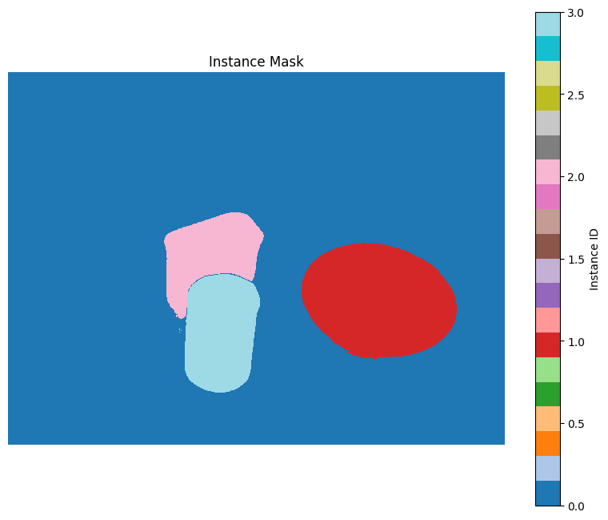

Method at a glance
- Observe partial geometryRGB-D images, camera calibration and foreground masks are converted into pointmaps. DINO visual features add appearance information to the geometric representation.
- Predict novel viewsRay and pointmap Transformer encoders feed a cross-attention decoder. DPT-style heads predict depth and foreground masks for novel camera rays.
- Learn structured featuresAn additional multi-scale feature head fuses decoder and point features. Pull/push objectives encourage coherent same-instance embeddings and separate different instances.
- Fuse and evaluatePredicted views form completed point clouds. Geometric metrics and feature visualizations help inspect completeness, alignment and instance separation.
Schematic summary of the project workflow.
Task and research focus
A single view exposes only part of an object. Geometry completion aims to infer missing surfaces; a useful scene representation must also preserve which object or part each point belongs to. This project explored that intersection through existing reconstruction models, additional feature learning, and experiments on large rendered datasets.
My work combined method integration and selected model refinement with the engineering needed to run data generation, distributed training and large-scale experiments. The project builds on pretrained research models rather than treating those models as original inventions.
Architecture and methods
The RaySt3R configuration uses separate ray and pointmap encoders and a Transformer decoder conditioned on DINO features. Depth and foreground-mask heads produce novel-view geometry. An added PartHead adapts four feature scales and injects three scales of point features through cross-attention, using windowed attention for larger maps.
The configured instance/part representation has eight feature channels. A discriminative loss pulls features from the same instance together and pushes different instances apart; eroded masks provide cleaner positive labels near object boundaries. This is instance-aware feature learning, rather than an implemented open-vocabulary language head.
Complementary baselines offer different representations: VGGT predicts geometric scene properties with a feed-forward Transformer; VolSplat constructs voxel-aligned 3D features and decodes them into Gaussian primitives for novel-view rendering.
Data and training infrastructure
The training setup uses GSO and OctMAE/Objaverse-derived rendered scenes. A separate loader adapts raw Omni6DPose/SOPE RGB images, EXR depth, masks and metadata into object-centric views while updating camera intrinsics. YCB-Video scenes appear in the evaluation and segmentation workflow.
The training setup includes multi-GPU PyTorch training, Slurm launch scripts, sharded SquashFS storage and scene-list integrity checks. These components make large datasets usable without repeatedly unpacking them into millions of small files.
Evaluation and takeaways
Evaluation utilities measure symmetric nearest-neighbor Chamfer distance and precision, recall and F1 at a 10 mm threshold. Feature-map, PCA and cluster visualizations provide a complementary view of whether learned features remain consistent across reconstructed geometry.
The figures below show a real preprocessing example from a saved experiment notebook: a YCB-Video input and the instance labels produced using SAM2 point prompts. They illustrate the input-to-mask stage; they are not a reconstruction benchmark.
Project visuals



Related resources
- RaySt3RNovel-view depth completion backbone.
- RaySt3R training data
- VolSplatVoxel-aligned Gaussian reconstruction baseline.
- OctMAEScene completion model and rendered data source.
- VGGT
Based on the team’s model implementation, dataset loaders, training configuration, and saved experiment notebooks. Reconstruction backbones are credited in the related resources.